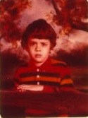

Some weeks ago when Abby and I were in DC to stay with my sister and her husband in order to see and help out with our new nephew, we took a trip to go to the Great Wall supermarket in Virginia to buy groceries for the household.
Eden Center
But on the way, we stopped at this place we found about called Eden Center that is unique all-Vietnamese shopping/dining center with over a hundred stores. We figured on just exploring a little, then eating lunch, before heading further out to Great Wall.
We didn’t feel like looking up reviews or anything to get a quick lunch. While we were wandering around, Abby ended up picking a place to eat. It was called “Thanh Tòng” (we don’t know any Vietnamese at all, by the way), and we ordered two items and they quickly arrived and we had a very filling lunch.
How did Abby choose where to eat, given the bewildering number of choices?
Jun 12, 2012 · 1 minute read · Comments musicIrish flute
Casey Burns Folk Flute I have finally submitted an order for the Casey Burns Small-Handed Folk Flute, after having sat on the decision for two weeks and discussing it with Abby.
Rationale Basically, I am committed in the long run to exploring Irish music seriously, so this is not just a whimsical purchase. Also, I can obviously use this flute to play other traditional, non-Irish music as well.
Read On →
This was my first local programming conference since some Perl conferences years ago!
Why attend?
In the past couple of years, I have increasingly explored Pittsburgh’s growing programmer meetup scene, but I wanted to expand beyond that to start attending some local conferences, so of course I was going to attend this one. (I had to cancel a hiking/camping outing in order to make it!)
May 26, 2012 was Your Day Without Shoes, which Abby and I tried to observe, even though we were in DC at my sister’s at the time, visiting our new nephew, and therefore we were in an unfamiliar environment.
It turned out that although Abby did spend the day without shoes, I wore shoes once in the morning and then not again the rest of the day. I’ll explain why, and also describe my actual very first day without shoes (while being out and about), which was today.
Today I celebrated National Running Day by, uh, going out for a run. Here in Pittsburgh, I have come to like most to run in Frick Park, but today I decided to run in Schenley Park instead, as I was in a sentimental mood.
I ran the out and back Pretty Good Race course on the Panther Hollow Trail in Schenley Park, as I have done at least several dozen times in the past thirteen years. My favorite part is always the long downhill return back to the start, during which I try to really fly down fast, feeling the wind rush past me. It’s the reward for having run uphill in the first half of the course!
Pretty Good Race 5K course
I was not always a runner. I only started to run at age 29, during a turning point in my life. And it turned out that Schenley Park played a vital role in getting me out the door and on my feet.
The description of today’s hike, the seventh of eight:
Sunday, June 3, 2012
Leader: Craig Fowler 412-491-6643
18.1 miles
Elevation change: 6915 ft.
“On this hike we’ll cover the second half of this year’s Challenge course. Starting in Springdale near the Springdale Veterans Association Hall, we’ll hike through Springdale then hit Log Cabin hill, Lefever Hill, and Rich Hill. Then we’ll stick the landing in North Park. Meet at the Harmar Shelter in North Park. Directions: Take I279 north to the McKnight Road exit and travel 6.4 miles north. Take the North Park/Ingomar Rd. exit east and turn right at the third traffic light onto Babcock Blvd., then take the next left onto Hemlock Drive, then left again into the swimming pool lot. Follow the perimeter drive all the way back and bear right. The Harmar Shelter is ahead on the left, behind the guardrail.”
It turned out that a lot of things went wrong during this hike, but we survived!!
Jun 3, 2012 · 5 minute read · Comments childhoodchesslearningfatherchildhood
I’ve been writing a lot recent about life lessons learned from playing chess as a kid. Here are some life lessons I learned as a result of the fact that my father never let me win a chess game against him. Based on what I have seen adults doing with children, I somewhat suspect this is unusual. I get the impression that parents like to let their children “win” at something, presumably for the purpose of giving them a “self-esteem” boost.
Read On →
The past couple of days, I have been writing about what I learned through playing chess as a kid. I continue today by discussion a game I played right before retiring from chess at age fifteen. This game came to my mind when I was writing about the chess computer game I played at age seven, because I played against the Accelerated Dragon of the Sicilian Defense in that game, and in my retirement tournament I also played a game against that opening.
My final tournament before I started the 11th grade and became fully absorbed in academic study was kind of special because I played reasonably well, achieving an Expert rating just as I retired, jumping from a rating of 1934 to over 2000, and because it was one of those tournaments held in East Lansing, which meant visiting and staying with my aunt and uncle and cousins.
The game I played in the Michigan Open was the second to last chess game I played in a serious tournament before returning to chess over twenty years later. It ended up being published in the following Michigan Chess magazine issue, warranting a short note that it was reminiscent of a “famous Fischer-Reshevsky debacle”.
Pride or shame? Creative or original?
When I was playing my game, I was feeling pretty proud of my winning combination, even though I knew it was not completely original; I in fact had been inspired by a theme in the Fischer-Reshevsky game that I had remembered when first encountering it in a book with my father back when I was eight years old. When I read the Michigan Chess magazine column and saw that, of course, the editor saw the resemblance, I felt deflated. As a result, I never showed my father the mention of my game in the magazine, nor did I show the game to him.
Today, I’m writing about what I learned from the only other chess game I played on site in elementary school. I played this game much earlier than the computer game; I played it with a classmate who had seen me looking at chess books in the classroom library and challenged me to a game. Let’s call him X. Here are our school photos:
Franklin Chen 2nd grade school photo

Classmate in 2nd grade I played one chess game with